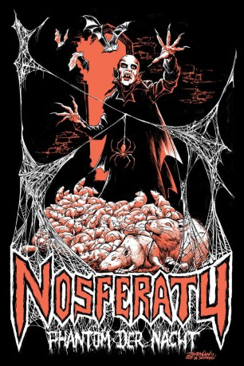

#4150 Nosferatu - Phantom der Nacht
Alternativ: Nosferatu the Vampyre (Originaltitel)
 
 IMDB-Wertung: 7.6 / 10
IMDB-Wertung: 7.6 / 10  Metascore: 0
Metascore: 0 
Jonathan Harker ist alles andere als begeistert, als er den Auftraag erhält, von Wismar ins ferne Transsylvanien zu reisen. Dort interessiert sich ein gewisser Graf Dracula für den Kauf eines Hauses in der Hansestadt. Schweren Herzens verabschiedet er sich von seiner geliebten Frau und reitet los. Er ahnt nicht, welches Grauen ihn erwartet.
Jahr: 1979
Dauer: 107 Minuten
FSK: 16
Land: West-Deutschland Studio: 20th Century Fox of GermanyTonspuren:
Untertitel:
Auflösung: 1080p (1920x1040) Größe: 9840 MB
Genre: Horror
Regisseur:  Werner Herzog
Werner Herzog
Drehbuch: Jeff Maguire
Soundtrack:
Darsteller:
 Klaus Kinski als Count Dracula
Klaus Kinski als Count Dracula Isabelle Adjani als Lucy Harker
Isabelle Adjani als Lucy Harker Bruno Ganz als Jonathan Harker
Bruno Ganz als Jonathan Harker Dan van Husen als Warden
Dan van Husen als Warden Werner Herzog als Hand and Feet in Box with Rats , uncredited
Werner Herzog als Hand and Feet in Box with Rats , uncredited- Roland Topor als Renfield
- Walter Ladengast als Dr. Van Helsing
- Jan Groth als Harbormaster
- Carsten Bodinus als Schrader
- Martje Grohmann als Mina
- Rijk de Gooyer als Town official
- Clemens Scheitz als Clerk
- Lo van Hensbergen als Harbormaster's Assistent
- John Leddy als Coachman
- Margiet van Hartingsveld als Vrouw
- Tim Beekman als Coffinbearer
- Jacques Dufilho als Captain
- Michael Edols als Lord of the manor , uncredited
- Stefan Husar als (uncredited
- Norbert Losch als (uncredited
- Johan te Slaa als (uncredited
- Beverly Walker als Nun , uncredited
Datei: X:\1979\Nosferatu - Phantom der Nacht (1979, FSK16, 1920x1040).mkv seit 26.07.2016
Festplatte: HD 1971-1979
 Es gibt insgesamt 29 Filme in der Gruppe '1979'
Es gibt insgesamt 29 Filme in der Gruppe '1979'